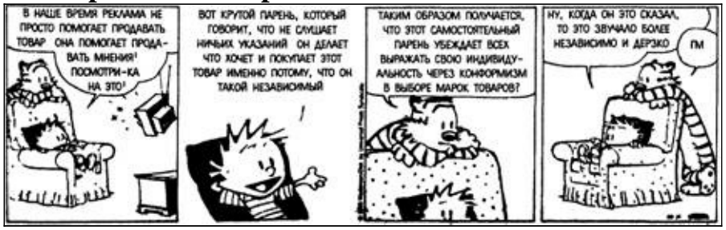
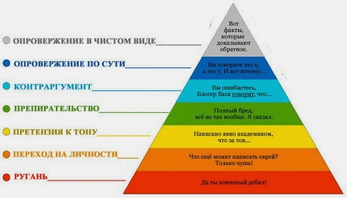

Комментарии к материалам о неконструктивных методах ведения дискуссии

Дайана Халперн, «Психология критического мышления»
Речь идёт о подразделе «Двадцать один распространённый ложный довод» — перейдите по ссылке и откройте 234-ю страницу. Цифры, с которых начинается новый абзац, означают номер «ложного довода» по классификации книги Халперн.
Разберём не то, чего в книге нет, а непосредственно подмеченные неточности. Вполне допускаю, что «виноватым» может оказаться переводчик или же чего-то недопонял автор этой статьи.
- В примере с Фондой и Хэйденом не «ассоциированная вина», а неаргументированное заявление о схожести взглядов суда и Фонды/Хейдена. Как сказано далее: «они могут иметь подобные взгляды или не иметь их».
- «Оно надеется, что потребители поддержат “побеждённого”, т. е. компанию №2. Следует ли подобное заключение из того, что это компания №2?» — ничего не понял. Вероятно, последнее предложение должно завершиться так: «что потребители, скорее всего, поддержат компанию №2?» И для чего приводить неудачный пример упора на жалость?
-
В-четвёртых, обязан ли кто-либо за небольшой срок, отведённый рекламному ролику, упоминать об «удобстве сидений» — относительно несущественном параметре?
В-третьих, термины не мешало бы разделить. Полагаю, что «подтасовка» и «умолчание» — разные понятия, чтобы объединять их в один пункт.
Во-вторых, по моему мнению, умолчание становится демагогическим приёмом тогда, когда недоговариваются «ключевые факты», к коим не отнёс бы то же «удобство сидений». Притом следует отличать умолчание от незнания: вероятно производителю и неизвестны марки автомобилей, превосходящие его собственную по всем характеристикам.
Ну и во-первых, обязательно добавил бы, что всегда необходимо скептически относиться к аффилированным источникам, к коим непременно относится реклама.

- «превратилась в вывод» — не «вывод», а «мнение». Конструкция «посылка — вывод» не используется.
- Вообще бы убрал пункт как некорректный. Т. н. ложный довод словно взят из формальной логики, с того острова, где проживают лжецы и правдивые, всегда лгущие и говорящие правду соответственно. Со 100-процентной гарантией мы, разумеется, не можем утверждать, что суждения, верные для частей, окажутся таковыми применительно к целому, и наоборот. Однако скорее всего футболист, играющий в классной команде, сам звёздного уровня, равно как и клуб, составленный из высококачественных футболистов, будет бороться за первые места. В жизни большее значение имеет именно это «скорее всего».
- Отсутствие данных вполне может служить основой для заключения по косвенным признакам. Что есть «доказать»? Ну и не считаю, что одним абзацем так разом опровергаются аргументы сразу обеих сторон дискуссии о существовании Бога — о чём исписано немало статей.
Вы же помните, как говорилось в четвёртой главе первого послания апостола Павла фессалоникийцам?
Раз уж речь зашла о религии, мне вспомнился этот вопрос от представителя одного движения, который я бы и сделал иллюстрацией «использования незнания». - Опять же не слишком удачная иллюстрация, почему это игра на фортепиано и занятия танцами настолько различные виды творческой деятельности, что можно было бы уверенно утверждать «некорректную аналогию»? Да, надеюсь, подразумевалось, что мать перво-наперво выяснила и проанализировала причину — возможно, занятия приходились ребёнку по душе, но его обижали, или же тосковал, что Мировая Душа оборвала все контакты с ним.
- Приём отсылки к неавторитетным источникам по тематике зачастую наоборот называют «обращением к авторитетам». Снова думаю, что пример можно было привести и получше, допустим, если бы в прениях о квантовой физике одной из сторон приводились аргументы, основанные на словах биолога; нынешний же перекликается с bandwagon’ом — см. текст пункта 4 о Кристи Бринкли.
- «но кем» — «всеми», как и следует из утверждения «Всеми признано, что у нас лучшее мороженое» :) . Приём другой — некорректное употребление форм местоимения «всё».
Имела место неудачная попытка суда доказать, что слоган Яндекса Всемогущего «Найдётся всё» вводит пользователей в заблуждение.
- Ох уж эти примеры… Нужно заседать в Верховной раде или Государственной думе, чтобы видеть между данными двумя событиями причинно-следственную связь, а не корреляцию.
- (На мой взгляд, не очень удачно подобран термин «снижение», не отражающий сути.) Охарактеризовал бы приём, включающий данные примеры, как разновидность эксина — неаргументированного негативного мнения. Конструктивно настроенный человек прокомментирует, на чём основываются его недовольство.
- По сути, здесь такая же разновидность неаргументированной критики, что и в п.19. Да, и мне не приходилось сталкиваться ни лично ни удалённо подобными людьми, не уверен, что этот ложный довод можно считать «распространённым».
Вопрос, касающийся следующего, 17-го пункта: каким образом ведётся учёт необнаруженных мин, в миллионах?
Итог: исходя из вышесказанного, полагаю, что классификация, приведённая в книге Дайаны Халперн, сама по себе достаточно слабая, и может разве служить основой для дальнейших разработок. И считаю, в ней много чего ещё не упомянуто, — аргументов к этому последнему высказыванию в пределах данной статьи не привожу, так что хотите верьте ему, а лучше нет. Несмотря на общее позитивное впечатление о книге, подраздел оставил сырости и непроработанности. О последней может косвенно свидетельствовать факт отсутствия структурированности/категоризации достаточно большого количества пунктов (21), что обычно случается при недостаточно тщательном исследовании материала. Также хотелось бы больше и реалистичнее примеров.
Пирамида Грэма

Статья. Нумерация данных комментариев к ней идёт от менее к более конструктивным типам опровержения, т. е. «ругань» — 7, «опровержение в чистом виде» — 1.
- Обращение сменить тон — далеко не всегда неконструктивный приём. Взять того же «академика» из примера — представьте, что вы читаете написанную «птичьим языком» научную статью не по своей специализации, многое удаётся осилить? Вам непонятны слова оппонента-«академика». Или же вам что-то объясняют по сути верно, но сплошным матом, — вряд ли испытываете большое желание продолжить столь занимательный диалог. Теперь рассмотрим следующие примеры:
- Ты чё, самый умный выискался?
- Молодой человек, у нас солидное общество, бросьте эти ваши простонародные выражения.
- Так, или начнёшь говорить нормально, либо до свидания.
Понятен ли авторам данных фраз смысл слов собеседника? — Положим, полностью. — Оскорблял ли кого-либо этот собеседник? — Допустим, ни единым словом. Вот претензии к тону, вызванные неприязнью к чужим манерам и/или образу действий, становятся неконструктивными.
- Высоковато расположен пункт: вообще-то, нацеливание на другие предметы — это демагогический приём. Придерутся к мелочам, продолжат развивать уход от темы — и вы не замечаете, как отклоняетесь от ключевой точки всё дальше.
- Если быть точным, «самая убедительная» форма разногласия всё же следующая по списку — «опровержение в чистом виде».
Критических недостатков в Пирамиде Грэма не обнаружил, как подворачивается случай, ссылаюсь на неё. Притом количество нападок, агрессии и оскорблений в аргументации снижается по направлению от низшей ступени Пирамиды к высшей.
Стоит, однако, не забывать, что спор не ограничивается одними лишь опровержениями: иногда уместно запросить верификацию, а не пытаться фальсифицировать; да и само опровержение может производиться относительно сущностей, не затронутых другой стороной (пример: в компанию поступило предложение о внедрении нового оборудования. → «Да, производительность увеличится, но с финансовой точки зрения мы останемся в убытке»). Ну и дискуссию, где оппонент не настроен на конструктивный лад, отнюдь не воспрещается покинуть.
По любым вопросам касающимся статьи, можете связаться со мной по электронной почте
или же оставив комментарий в issue tracker GitHub, кликнув по «New Issue». С комментариями в стиле новых недовольных русских оставляю право распоряжаться по собственному усмотрению.
Работайте над собой